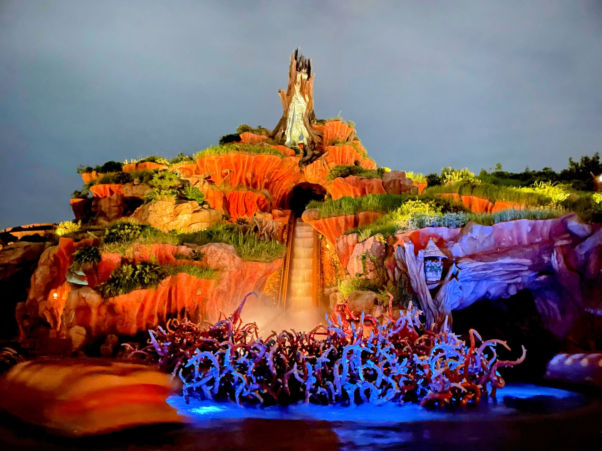

Splash Mountain

I. 密造酒が生んだ大洪水
アメリカ河の最奥にひっそりと佇む、緑豊かでユーモラスな小動物たちの国「クリッターカントリー」。その象徴である「スプラッシュ・マウンテン」の頂から流れ落ちる激しい滝には、かつてのどかな丘だったこの地を襲った大洪水の歴史が刻まれています。
もともとこの山は「チカピンヒル」と呼ばれる穏やかな丘でした。しかしある日、丘の奥で密造酒を作っていたアライグマの「ラケッティ」が、調合を誤り自家製の蒸留器を大爆発させてしまいます。その衝撃でビーバーたちの頑丈なダムが決壊し、大量の水が一気に溢れ出してふもとを水浸しにしました。この大洪水以降、クリッターたちはこの丘を「スプラッシュ・マウンテン（水しぶきの山）」と呼ぶようになったのです。
大洪水により開拓途中だった人間たちは退去していきましたが、水分をたっぷり含んだ肥沃な泥地は、小動物たちにとって絶好のフロンティアとなりました。彼らは人間が残していった道具や大自然の木の根を再利用して家や作業場を作り始め、独自の文明を持つ小さな国が完成したのです。
II. ブレア・ラビットと「ブレア」の正体
ゲストが乗り込む丸太のボートは、チカピンヒルの内部を進みながら、うさぎの「ブレア・ラビット（うさぎどん）」の冒険を追体験していきます。これは、退屈な我が家を飛び出し「笑いの国」を探し求めた彼の、知恵と故郷の物語です。
旅の途中で彼を狙うのは、ずる賢いきつねの「ブレア・フォックス」と、間抜けなくまの「ブレア・ベア」。ブレア・ラビットは持ち前の機転で彼らの罠を何度もかいくぐりますが、ついにフォックスに捕まり、丘の頂上で絶体絶命の危機を迎えます。
💡 「ブレア（Br'er）」と「〜どん」の豆知識
アトラクション名や原作キャラクターに共通してつく「ブレア（Br'er）」という単語。これはアメリカ南部の方言（なまり）で、**「Brother（お兄さん・兄弟）」**を意味する言葉が縮まったものです。
つまり、英語のニュアンスとしては「うさぎの兄貴（Brother Rabbit）」「きつねのお兄さん（Brother Fox）」と呼び合っていることになります。日本ではこれを非常に情緒豊かに、かつ泥臭く friendly に翻訳し、**「うさぎどん（ブレア・ラビット）」「きつねどん（ブレア・フォックス）」「くまどん（ブレア・ベア）」**という愛らしい名前で呼んでいるのです。
フォックスの罠にかかり絶体絶命のブレア・ラビットは、命がけの「最後のはっぱり（嘘）」をつきました。「煮るなり焼くなり好きにしてくれ。でも、あそこの『茨の茂み（Briar Patch）』にだけは放り込まないでくれ！」と。間抜けなフォックスたちは、彼が最も嫌がることをしようと、彼を茨の茂みへと投げ落とします。この落下こそが、ゲストが体験する最大傾斜45度のスリリングな急降下なのです。
実はうさぎである彼にとって、茨の茂みは「自分が生まれ育った最も安全な我が家」でした。フォックスたちの裏をかいて無事生還した彼は、やっぱり自分が元いた故郷こそが最高の「笑いの国」だったと気づき、クリッターたちが総出で彼の帰還を歓迎する、お祝いに満ちたフィナーレ（Zip-A-Dee-Doo-Dah）で幕を閉じます。
III. 泥地に建てられた街
クリッターカントリーにあるすべての施設は、大洪水の歴史とキャラクターたちの物語の中にシームレスに組み込まれています。
グランマ・サラのキッチン（レストラン）
ジャコウネズミの「サラ・オズボーン（サラおばあちゃん）」が営むレストラン。彼女はクリッターで一番の料理の達人であり、自宅を開放しました。この建物は、大洪水のあとに腕利きの建築家である「ビーバーブラザーズ」が、頑丈な木の根や泥を巧みに利用して建てた2階建ての巣の構造をしています。
ラケッティのラクーンサルーン（軽食）
かつて大爆発を起こしたアライグマの「ラケッティ」のお店。彼はあの大事故のあと深く反省し、密造酒造りから完全に足を洗いました。現在は、訪れるゲストのために爽やかで安全なソフトクリームやチュロスを販売しています。看板に自分の顔を描いているのは、彼の誠実な決意の証なのです。
フート＆ハラー・ハイドアウト（ショップ）
ここはもともと、クリッターの子供たちが大人の目を盗んで集まる「秘密基地（ハイドアウト）」でした。店名の「フート（フクロウの鳴き真似）」と「ハラー（大声の叫び）」は、子供たちが秘密基地に入るための「合言葉」からきており、見張りを知らせ合うための可愛いシステムが元になっています。
IV. ウエスタンランドからの境界線
クリッターカントリーは、隣接する「ウエスタンランド」と地続きのアメリカ開拓史のグラデーションを持っています。
ウエスタンランドは「19世紀後半のアメリカ西部の開拓街」であり、人間が作った文明の賑やかさがあります。そこからビッグサンダー・マウンテン側を抜け、クリッターカントリーへと歩みを進めると、だんだんと植物の緑が深く、濃くなっていきます。「人間が開拓したフロンティアの街」のすぐ隣には、「野生の小動物たちが独自の知恵で生きる深い森」が広がっているという、アメリカの大自然の圧倒的な奥行きが、歩くだけで体感できるように設計されているのです。
V. 小動物たちの「スケール魔術」
ディズニーの空間デザイナー「イマジニア」たちは、このエリアを「本当に小動物たちが暮らしている場所」にするため、驚異的なギミックを仕込みました。エリアに入ると分かりますが、小動物たちが作ったドア、窓、階段、看板、さらには街灯にいたるまで、すべて人間のサイズより一回りも二回りも小さく作られています。これにより、ゲストはエリアに足を踏み入れた瞬間、自分自身が絵本の中のクリッターサイズに縮んでしまったかのような錯覚（強制遠近法）を覚えます。
また、道端のあちこちには、人間（ハンター）のブーツの足跡が残されています。クリッターたちはハンターに怯えるのではなく、彼らの仕掛けたトラップを生活道具に改造し、残された大きなブーツを「植木鉢」や「看板」としてユーモアたっぷりに再利用して暮らしています。このような高い知性とたくましさが、エリアの至る所で表現されています。
VI. 世界で唯一、東京に遺された「奇跡」
これまで、世界中の複数のディズニーパークに存在したスプラッシュ・マウンテン。しかし現在、その歴史は極めて大きな変革期を迎えています。
アメリカ・フロリダのウォルト・ディズニー・ワールド（2024年6月28日オープン）および、カリフォルニアのディズニーランド（2024年11月15日オープン）では、長年親しまれたスプラッシュ・マウンテンが完全にクローズされ、映画『プリンセスと魔法のキス』をテーマにした**「ティアナのバイユー・アドベンチャー（Tiana's Bayou Adventure）」**というまったく新しいアトラクションへと生まれ変わりました。

これにより、1946年の映画『南部の唄』をベースにしたクラシックなスプラッシュ・マウンテンと、名曲「ジッパ・ディー・ドゥー・ダー（Zip-A-Dee-Doo-Dah）」を乗車中に聴くことができるアトラクションは、**全世界で唯一、この「東京ディズニーランド」だけに遺されることになった**のです。アメリカのオリジナルが新時代へと移行する中で、ここ日本のクリッターカントリーだけが、ブレア・ラビットたちの陽気で心優しい冒険の歴史を今もそのまま守り続けている、世界でも極めて貴重な「約束の地」となっています。